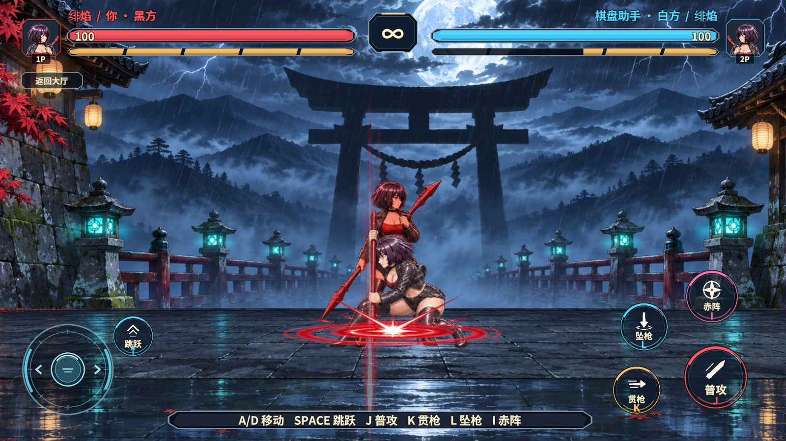
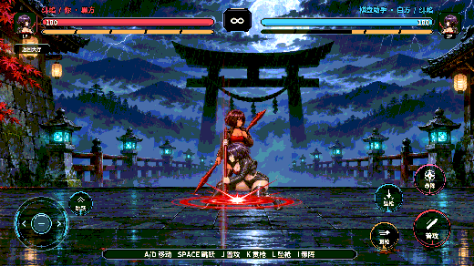

决斗抖动与按键修复
桌面 HUD 底部显示 A/D 移动、SPACE 跳跃、J 普攻、K 贯枪、L 坠枪、I 赤阵。圆形攻击和跳跃键在鼠标或触点按下时提交一次，短提示会显示已输入、已缓冲或能量不足。

录像复现与修复
录像在本地人机决斗中录制。待机的两张图姿势跨度较大，切换过快，Legacy Animation 与决斗视图还会同时写角色 Sprite。改为由决斗视图独占换帧，待机固定一张架势。双方贴身时，短距离内沿用显示朝向。普攻保留命中闪色和特效，技能与大招的镜头改为一次偏移再回正。
本地封帧之前从每次实际轮询时刻重新计算下一帧，迟到会累积。现在按同一条 50 毫秒时间轴封帧，长停顿后只封一帧并重建节拍。招式恢复或硬直期间，本地可以短时保留下一次攻击或跳跃。键盘和圆键经同一个 PvP 服务提交。
验收
Windows Unity Editor 2022.3.15f1c1 通过 RevCLI 的 game.pvp.duel-build 生成正式决斗场景。game.pvp.duel-atlas 打包 57 张 Sprite，共两页。固定 22 毫秒轮询的测试得到每秒 20 个逻辑帧，模拟 300 毫秒停顿后没有成批补跑。原生连招及预测回滚回归通过。
本地使用同一个 RevMCP 会话，先 rev_discover 查找入口，随后 rev_call editor.play，进入 Play 后再次发现运行期动作。rev_run 经 围棋对战/本地人机决斗 进入正式场景，按录像开启 围棋对战/决斗双方无敌。pvp.duel-control-check 使用 Unity EventSystem 射线、按下和松开事件，并插入 120 毫秒主线程停顿。两次普攻点按正好提交两次，第二次从缓冲成功接出后续普攻，角色的出招动画正常换图。

测试范围
修复前，实体鼠标路径已在编辑器复现跳跃触发。修复后，Windows 桌面自动化在获取鼠标位置时返回拒绝访问，最终按钮验证通过 Unity EventSystem 完成。使用的是本机编辑器与实际 AB 资源。独立 Player 和手机尚未复测。
两轮同机 UTP 的 rev_run 都通过 pvp.duel-prediction-view-check 发起测试，均停在围棋房间握手阶段。等待 pvp.duel-state 就绪超时，因此本次未执行联机 HUD 和六连击断言。两轮都通过 pvp.test-cleanup 清理夹具，回到大厅并停止 Play。
Revolution 继续负责场景切换、资源加载与自动化入口。UGUI 触点进入业务输入缓冲，GameCore 继续执行判定，视图根据快照更新角色和镜头。